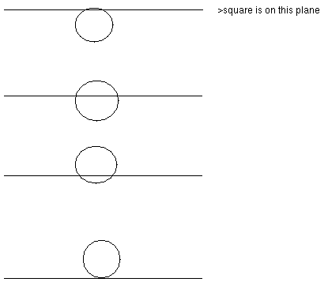
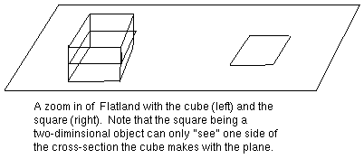
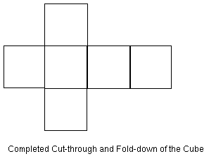
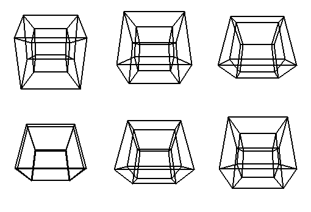
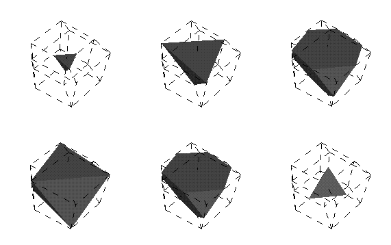
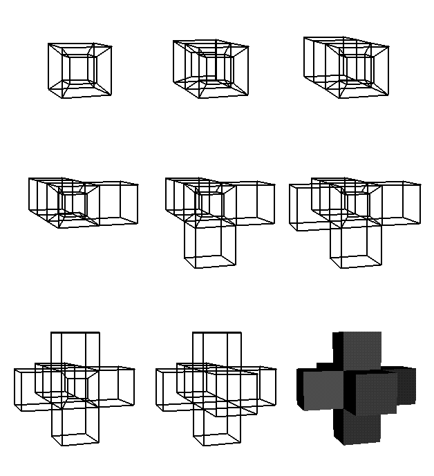

geometry.college, Tue, 6 Sep 1994
Given that humans only visualize three dimensions, how is it possible to visualize four dimensional, or higher, objects? This question is the underlying idea of a short novel written over a hundred years ago by Edwin A. Abbot called Flatland. Flatland is a story about two-dimensional creatures-- triangles, squares, circles and other polygons--that live on a plane. The story contains a section where one of the squares is visited by a three-dimensional object, a sphere. The sphere explains to the square the existence of higher dimensional objects like itself, and ways in which the square can understand the form of such objects. The method the sphere gives to the square can be generalized so that the form of four-dimensional objects can be seen in three dimensions. This method of viewing higher dimensional objects as well as others is one way people can understand the shape of higher dimensional space.
Before attempting to view four-dimensional objects in three-dimensional space, let us consider viewing a three dimensional object in two-dimensional space. In Flatland, the method in which the sphere showed its form to square was by raising its body through the Flatland surface. The square saw at first a point that quickly grew to a circle, which continued increasing in size, and then started decreasing in size until it became a point, and then it disappeared. So the square perceived the sphere to be an infinite collection of circles pieced together. The following is a series of pictures that show the sphere as it rises through the plane as the square saw it:

The flatlander square just as easily could have seen what a cube looked like by the following rising of the cube through space:

Before continuing further, it should be mentioned that for simplicity's sake and for aesthetic purposes, the forms which we will consider viewing are polytopes, the generalized term for polyhedra and polygons.
A second way to view three dimensional polytopes in two dimensions is by means of a projection. Projection is a popular method for Cartographers to create maps of the world from a globe. For instance the United Nations flag is created by a projection of the globe about the south pole. One especially useful type of projection in mathematics is called stereographic projection. Stereographic projection takes a sphere and maps it over the entire plane in the following manner. If one lays a sphere on a plane, the point of the sphere touching the plane stays fixed while the point directly opposite it, i.e. "the North Pole" gets sent to infinity. Any other point on the sphere is sent to the unique point on the plane found by intersecting the plane with a line made from the point at the north pole and the point on the sphere. The following picture is an example of a cube which is contained in the sphere, stereographically projected onto the plane. Such a picture is also called a Schlegel diagram:
Note that instead of projecting the Cube in the manor shown above, the cube could have been rotated so that its faces were not parallel and perpendicular to the plane, but rather at different angles which would result in a different projection.
A third way to view polyhedra in two-dimensions is through a method defined by Barbara Hausmann and Hans-Peter Seidel as "Cut-Throughs" and "Fold-Downs". Since polyhedra have as faces regular polygons, one could cut a polyhedra on the edges and fold it in a way so that all the faces are lying on the plane. Here is an example of the cube after it has been cut-through and folded-down:

As you may have already surmised, all of the above methods can be used to visualize four dimensional polytope in three dimensions. But before showing these different ways of viewing polytopes, an explanation of how these polytopes are constructed is in order. As regular polyhedra are constructed from regular polygons, so are regular 4-dimensional polytopes constructed from regular polyhedra. Recall that there are only five regular polyhedra:

The following sequence of pictures is of a slicing of the hypercube into three dimensions. Note that as the hypercube passes through our three-dimensional space, it is growing and then shrinking from various polyhedra shapes. This is analogous to the slicing of the cube in the plane shown earlier.

The last set of pictures shows the step-by-step approach of the hypercube being cut-through and folded-down. Note that in each stage of the process a cube pops out of the hypercube, which is analogous to a square coming out of a cube as one dissects a cube.

In Flatland, the square discovered that the sphere was an infinite collection of circles. However the square was unable ever to actually view the sphere in the same way we three-dimensional beings are able. Similarly, we can discover what some four-dimensional objects look like by viewing aspects of them in three dimensions. But like the square, we are limited in understanding the whole nature of these objects.
This article is based on an interview and a seminar given by Barbara Hausmann at the Geometry Center.
![[HOME]](polytope_files/home.gif) The Geometry Center Home Page
The Geometry Center Home Page
Comments to:
webmaster@www.geom.uiuc.edu
Created: September 6 1994 ---
Last modified: Jun 18 1996